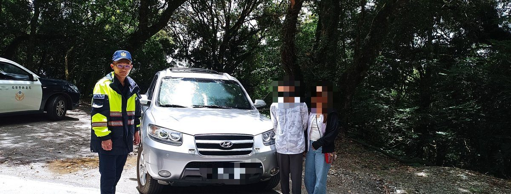

合歡山旅遊車輛拋錨受困中橫公路 新城警合歡所熱心馳援助遊客平安脫困

可樂電子報小編/編輯
花蓮縣警察局新城分局合歡派出所日前接獲民眾緊急求助報案，表示其駕駛自小客車行經臺8線中橫公路126.5公里處時，車輛突然無預警熄火拋錨，由於位處偏遠高山路段且氣溫偏低，駕駛與友人受困路旁孤立無援。合歡派出所警員林宏良獲報後，秉持為民服務熱忱，立即頂著山區低溫驅車趕赴現場查處協助。

警方抵達現場後了解，湯姓男子趁著休假駕車偕同友人前往合歡山風景區遊玩，不料行經中橫山區時，疑似因車輛機件老舊而拋錨熄火，多次嘗試仍無法順利發動。林員先行檢視車況，考量高山偏遠地區修車資源匱乏，隨即協助提供可上山救援的合格拖吊業者資訊；在等候拖吊車翻山越嶺前來馳援期間，林員主動於現場擺設警示並協助疏導山區交通，維護往來車輛行車安全。
由於當時已過中午用餐時間，林員細心察覺湯男及友人因車輛突發狀況驚魂未定且尚未用餐，山區氣溫偏低恐有失溫之虞，便貼心以巡邏車將兩人載往附近的關原加油站商店採買熱食與飲水充飢，讓民眾在溫暖安心的環境下等待拖吊車抵達。隨後拖吊車順利抵達將故障車輛吊離檢修，湯男等人對員警在偏遠高山第一時間伸出援手、視民如親的暖舉感動不已，頻頻向員警致謝。
新城警分局長特別提醒，合歡山等高山地區地處偏遠且海拔超過兩千公尺，氣候變化莫測、溫差極大，民眾駕車前往山區旅遊前，務必落實行前三級檢查，確實確認車況良善、煞車系統正常及燃油充足，並妥善規劃行車路線與保暖防寒措施，避免行車途中因機械故障受困山區，以確保高山旅程平安順遂。